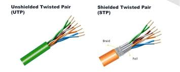
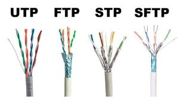

El par trenzado es uno de los medios de transmisión más antiguos y utilizados en las telecomunicaciones. Consiste en pares de conductores de cobre entrelazados para reducir interferencias. Según Stallings, este medio es ampliamente empleado en redes locales.
El trenzado de los cables permite minimizar el efecto del ruido electromagnético y la diafonía. Existen diferentes categorías de par trenzado, como UTP y STP, que ofrecen distintos niveles de protección y velocidad. Forouzan señala que su bajo costo y facilidad de instalación lo convierten en una opción popular para redes de corta distancia.

